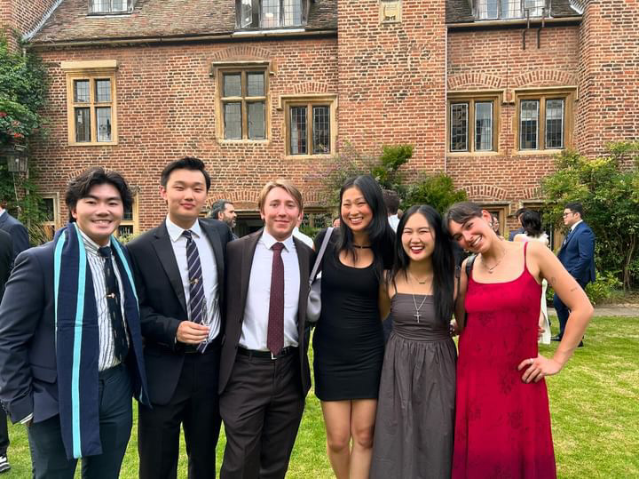

2024

UCEAP: Summer in Cambridge
University of Cambridge, England
A transformative summer studying Robotics, Macroeconomics, and Material Science at one of the world's most prestigious universities. This experience challenged my assumptions, expanded my worldview, and showed me the incredible potential that comes from stepping outside my comfort zone.
Robotics
Macroeconomics
Material Science
"Studying abroad at Cambridge was the best opportunity I've ever seized. It opened my mind to new perspectives, challenged my assumptions, and showed me the incredible potential that comes from stepping outside your comfort zone."Read my full testimonial